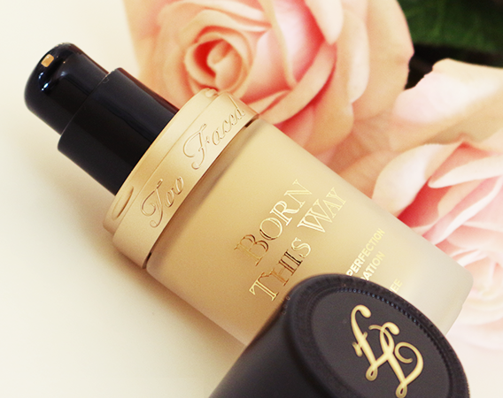
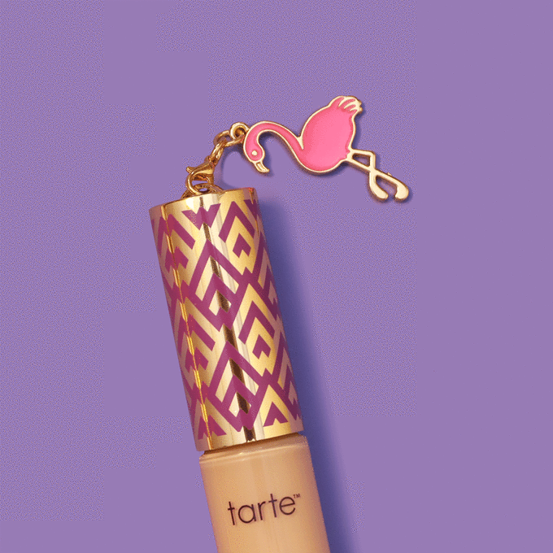
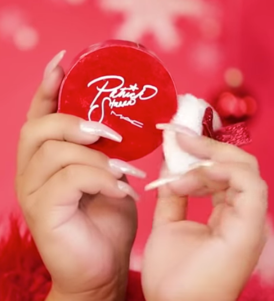
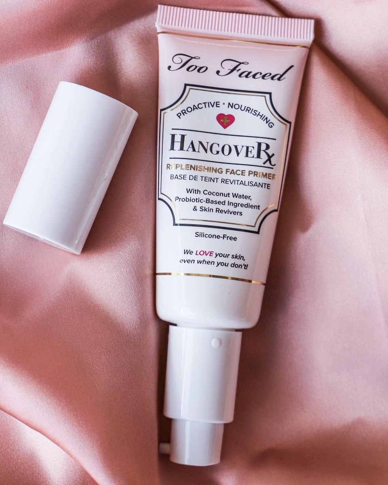

Makeup
Lo mejor para mi para ustedes
Lo mejor para mi para ustedes
 El fondo de maquillaje no graso Born This Way aporta una cobertura imperceptible que disimula eficazmente las imperfecciones y deja la piel radiante con un aspecto natural. Este fondo de maquillaje está compuesto por una mezcla patentada de agua de coco, que hidrata la piel; rosa alpina, que ilumina su aspecto; y ácido hialurónico, que la suaviza y rejuvenece. Así que ya sabes: deja que crean que has nacido Born This Way. ¿Cómo se aplica? Para lograr una cobertura ligera, aplicar una pequeña cantidad en el centro del rostro y extenderla hacia el exterior con la yema de los dedos, una esponja o una brocha. Para conseguir una cobertura más pronunciada, ir añadiendo capas hasta conseguir el efecto deseado. polvo
 Nos referimos a un gran clásico: al icónico Touche Éclat de YSL. Este pincel iluminador con infinitos usos (en la web oficial de YSL hay algunos bastante inesperados) sigue siendo la herramienta fetiche de muchos maquilladores de moda para despertar una mirada cansada. Así nos lo confirma, por ejemplo, Miguel Ángel Álvarez, que sigue eligiéndolo como uno de sus preferidos. Aunque es cierto que puede no ser la mejor opción para disimular unas ojeras muy oscuras (en ese caso el maquillador recomienda la versión más cubriente de YSL, All Hours Concealer), las que no tienen unas ojeras muy pronunciadas lo eligen como "la mejor opción". ¿Otro ejemplo? Las palabras de la presentadora de televisión Flora González: "Siempre lo llevo en el bolso porque es fácil de aplicar y me sirve para iluminar y refrescar la mirada", nos cuenta Flora, que afirma que hay días en los que su maquillaje tiene que aguantar perfecto hasta 10 horas seguidas.
 Un acabado tan natural que todos pensarán que eres. . . Born This Way. Unos polvos ligeros y sedosos que favorecen que el maquillaje sea de larga duración. Este polvo fijador de textura etérea crea un velo luminoso que perfecciona el aspecto de la piel con un acabado tan natural que todos pensarán que eres Born This Way. Su tono universal se adapta a todas las tonalidades de piel. Ilumina el cutis con un velo luminoso El ácido hialurónico otorga a la piel un aspecto más liso y rejuvenecido
 Para qué tipo de maquillaje Reduce rápidamente la visibilidad de los poros y las arrugas para una piel más lisa que lisa!.Su fórmula translúcida contiene un derivado de la vitamina E, conocida por combatir los nefastos efectos de los radicales libres. Cómo usarla Se puede utilizar como base o para realizar algún pequeño retoque durante el día. Aplica este bálsamo ligero y sedoso solo, encima o debajo del maquillaje. delineador